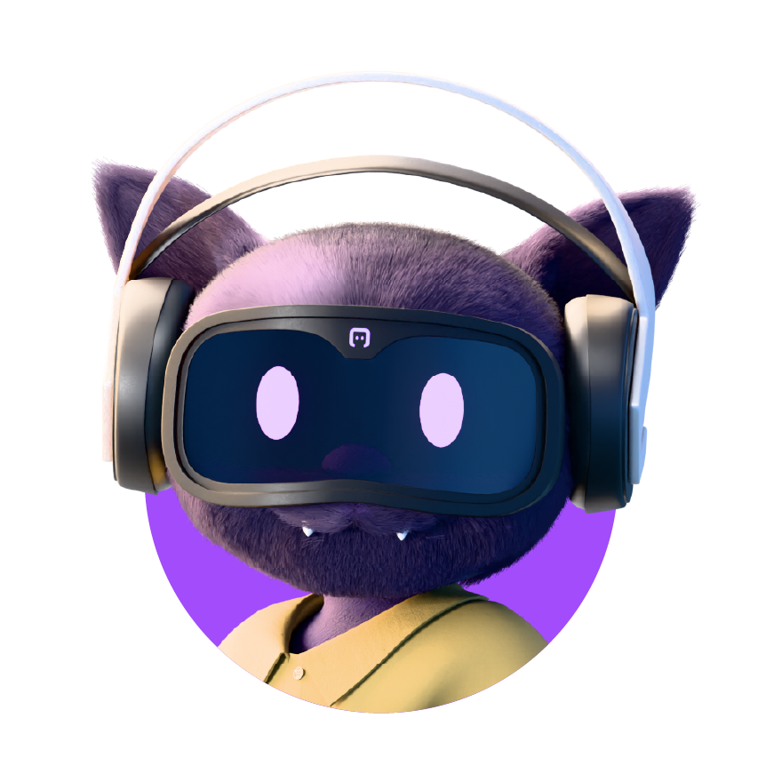
Full access to the same enterprise data and the same instructions. Nothing withheld, the test is fair.
If the question turns on an internal policy, a cap, a threshold, an eligibility rule, look for it in table comments, config tables, views and stored procedures. If it is not recorded anywhere you can query, say so plainly rather than guessing.
“Brandon Mitchell is asking about the ATM fees charged on his accounts. How much money is he owed back?”
Same data, same tools, same instructions in both runs. The only thing that changes next is the platform underneath.
A unified cognitive layer that gives AI agents the knowledge, memory and governance to operate as accountable digital workers — not isolated tools running in silos.
The Enterprise AI's missing layer
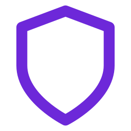
Trust Boundary +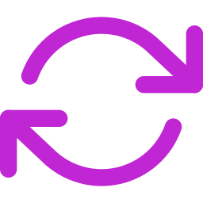
Cost ↓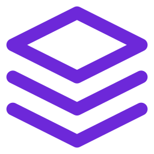
Time to Deploy ↓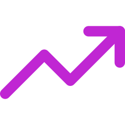
Accuracy ↑“The Enterprise AI’s missing layer”
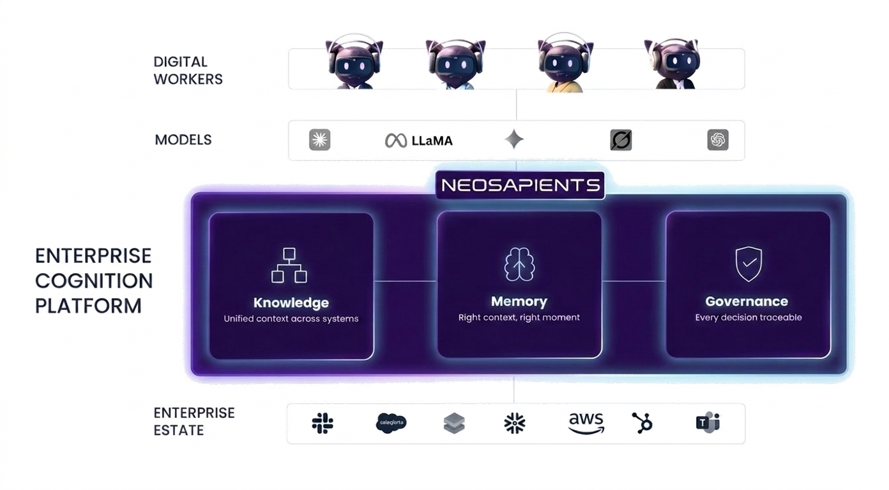
NeoSapients is all three pillars, engineered to work as one — which makes it something else entirely.
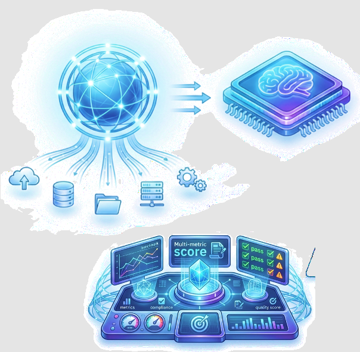
The tiered knowledge graph that maps what your enterprise knows, can do, and how it works.
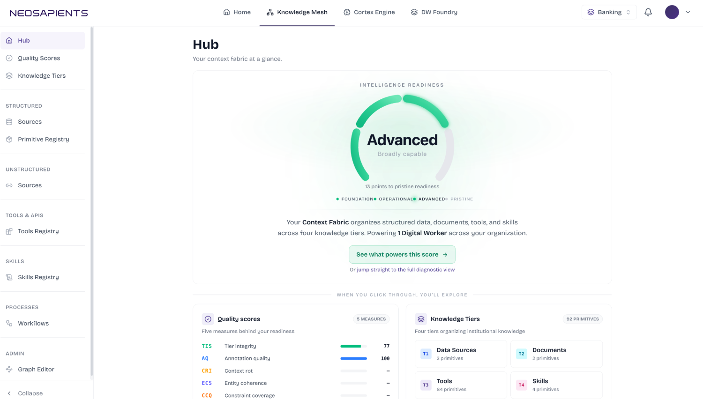
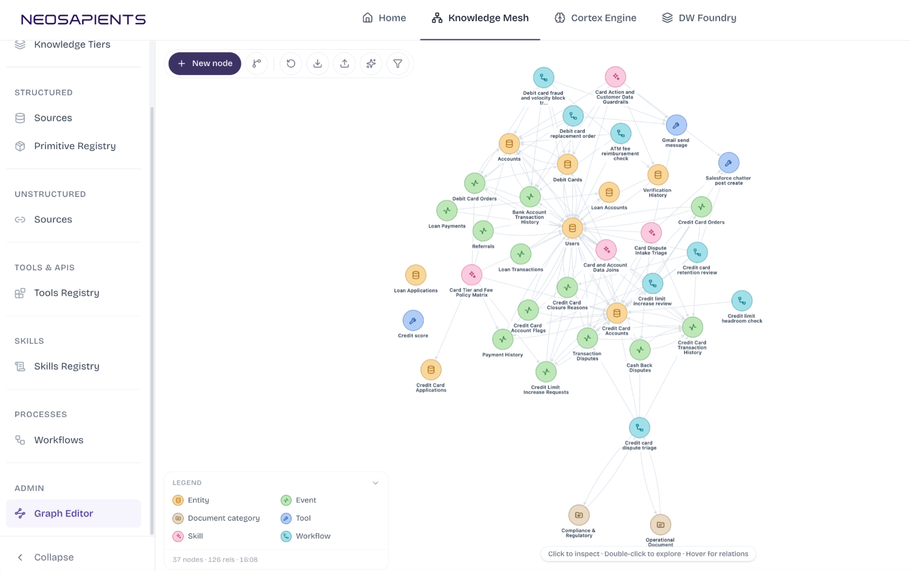
Reasons over the Mesh, assembles the right context and runs the workflow that fits.
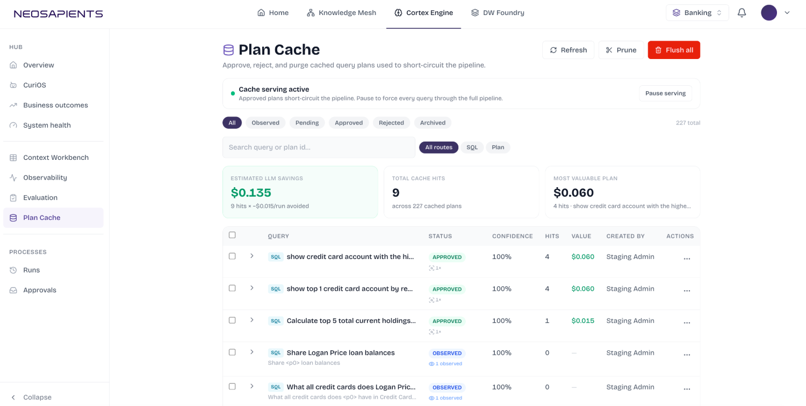
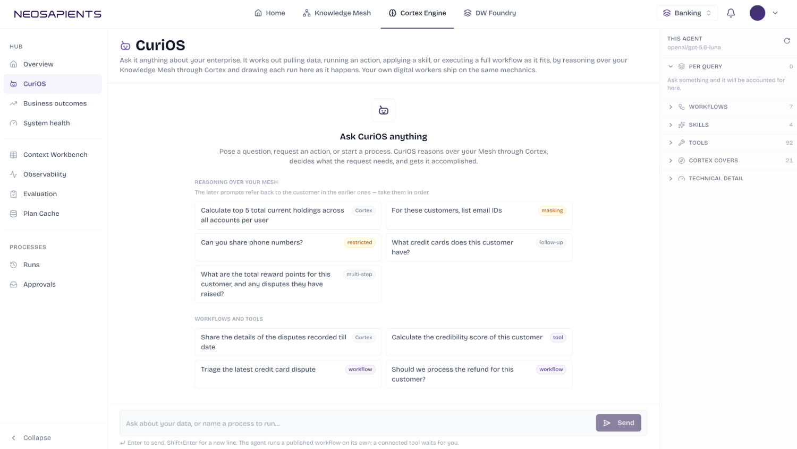
How the platform is measured, layer by layer.
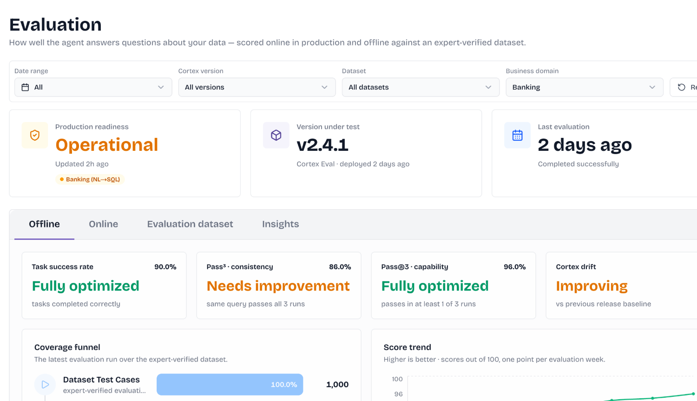
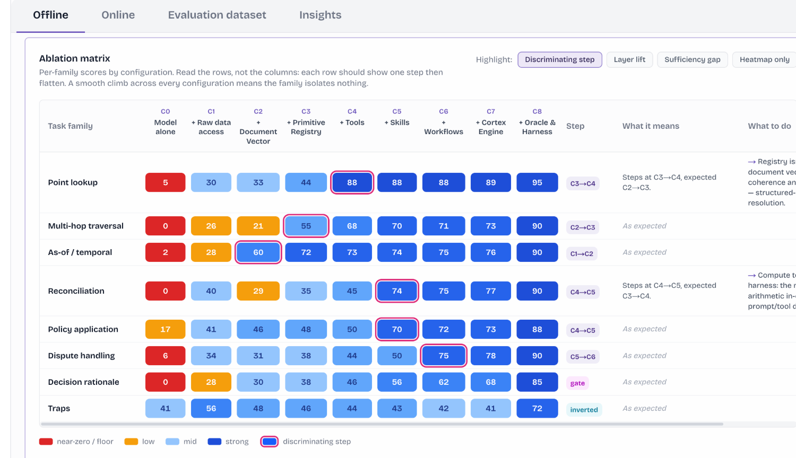